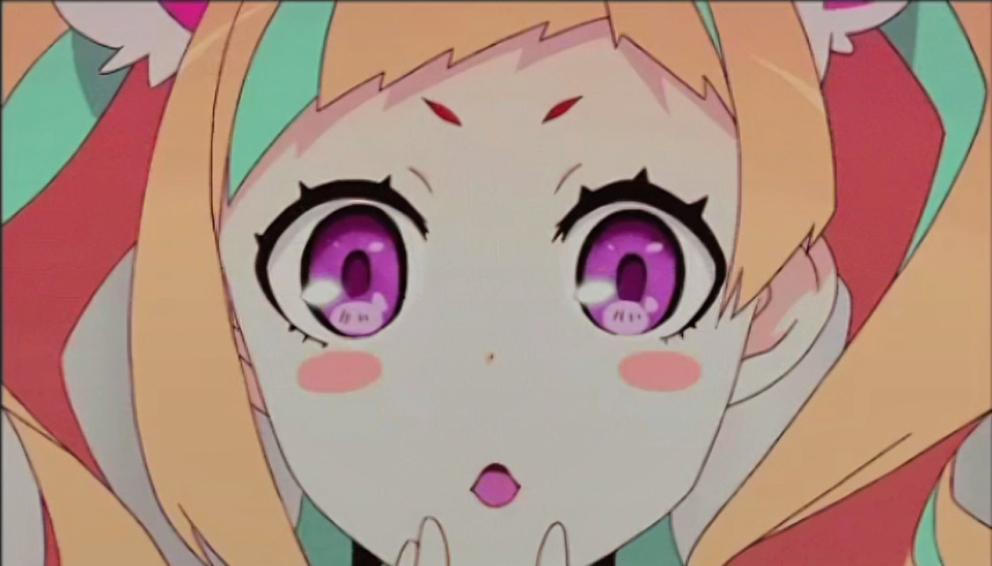

<!DOCTYPE html>
<html lang="en">
<head>
    <meta charset="UTF-8">
    <meta name="viewport" content="width=device-width, initial-scale=1.0">
    <title>Performance Task 1</title>
    <link rel="stylesheet" href="styles.css">
</head>
<body>
    <aside>
        
        
        
        

        <button id="myButton" onclick="toggleParagraph()">Function of eyes?</button> <br>
        <button id="revertButton" style="display:none;" onclick="revertParagraph()">close</button> 
        <button onclick="toggleVisibility('open').style.display='block'">Open her eyes!</button>
        <button onclick="toggleVisibility('close').style.display='none'">Close her eyes!</button> 
        <button onclick="toggleVisibility('openMouth').style.display='none'">Open her mouth!</button>
        <button onclick="toggleVisibility('closeMouth').style.display='none'">Close her mouth!</button>
    
    
        
    </aside>
    
    <script>
     function toggleVisibility(elementId) {
    var element = document.getElementById(elementId);

    if (element.style.display === 'none') {
        element.style.display = 'block';
    } else {
        element.style.display = 'block';
    }

    hideOtherImages(elementId);
}

function hideOtherImages(visibleElementId) {
    var allImages = document.querySelectorAll('img');
    
    allImages.forEach(function (image) {
        if (image.id !== visibleElementId) {
            image.style.display = 'none';
        }
    });
}

var originalText = "Function of eyes?";
var paragraphText = "The function of our eyes is to gather visual information from the environment and transmit it to the brain for inter<br>pretation. The eyes are complex sensory organs that play a crucial role in our ability to perceive the world <br>around us. The eyes function as sensory organs, gathering visual information from the <br> environment. This visual data is transmitted to the brain for interpretation, allowing us to <br> perceive and understand the world around us. The complex structure of the eyes, <br>including the cornea, lens, and retina, collaborates to focus light and convert it into neural <br>signals. Ultimately, our eyes play a crucial role in shaping our perception and<br> understanding of the surrounding environment.";

function toggleParagraph() {
    var button = document.getElementById("myButton");
    var revertButton = document.getElementById("revertButton");

    if (button.innerHTML === originalText) {
        button.innerHTML = paragraphText;
        revertButton.style.display = "inline-block";
    } else {
        button.innerHTML = originalText;
        revertButton.style.display = "none";
    }
}

function revertParagraph() {
    var button = document.getElementById("myButton");
    var revertButton = document.getElementById("revertButton");

    button.innerHTML = originalText;
    revertButton.style.display = "none";
}


</script>


    </script>
</body>